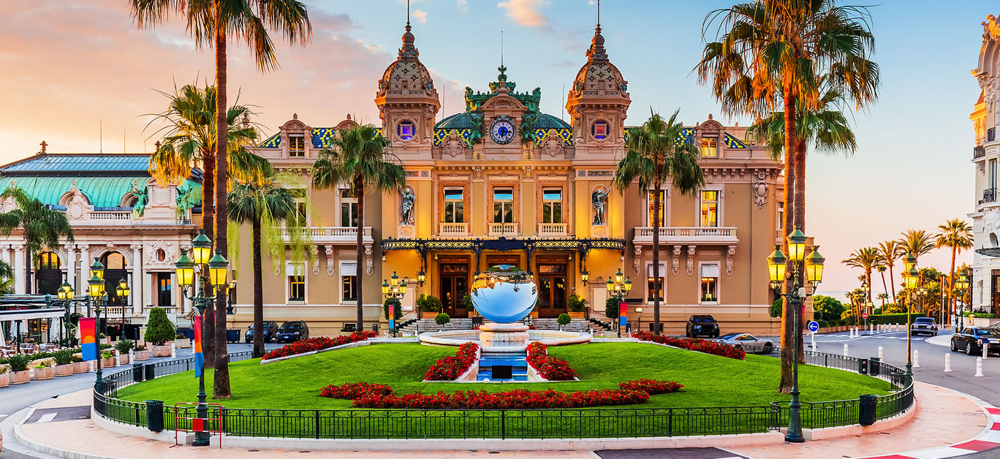
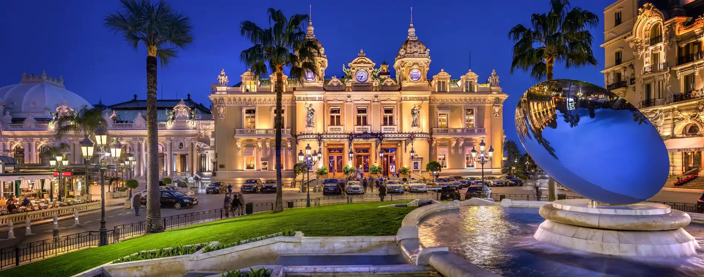

Monte Carlo Kaszinó a világ egyik legismertebb kaszinója, amelyet 1863-ban nyitottak meg Monaco gazdaságának fellendítésére. Az épületet a híres francia építész, Charles Garnier tervezte, aki a párizsi Operaházat is megalkotta.

A kaszinó nemcsak szerencsejáték-helyszín, hanem Monaco luxusának egyik jelképe is. Elegáns termeiben rulettet, blackjacket és pókert játszanak, miközben az épület díszes belső tere turisták ezreit vonzza évente. A kaszinó számos filmben is szerepelt, például több James Bond-filmben.